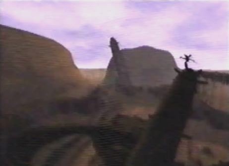
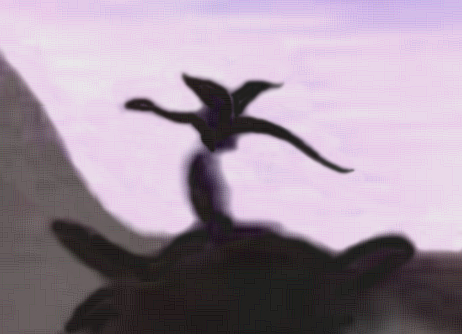

| Mysterious Winged Creature  |
|
 |
Info Upon arriving at the Village of Cainus, I saw this mysterious creature siting atop one of the village ruins. It was hard to see, since it was getting dark and was so far up. From what I could make out, it had a pair of wings, a long protruding tail and neck, as well as a small head. The creature seemed pretty harmless. It paid no attention to us and just flew away. But I wonder if it could have been one of the monsters Craymen used to attack the villagers. Maybe its stomach was full so it had no desire to feast on us! |